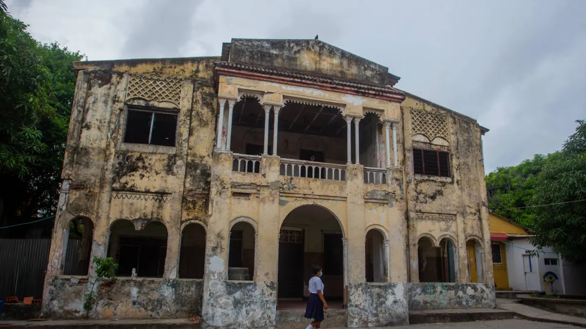

El Castillo de La Alboraya
Lugares misteriosos / Relatos y leyendas urbanas

La historia
En el suroriente de Barranquilla se encuentra una antigua construcción conocida como el Castillo de La Alboraya. Su arquitectura y su historia han despertado curiosidad durante generaciones, convirtiendo el lugar en escenario de relatos que mezclan memoria, misterio y tradición oral.
Según una crónica publicada por El Tiempo, la construcción de la casona comenzó alrededor de 1900, vinculada a la familia de Esteban Márquez y a Miguel Borrás. Con el paso de los años, alrededor de la propiedad surgieron historias sobre prácticas oscuras, ruidos nocturnos y presencias inexplicables.
Uno de los relatos más inquietantes habla de supuestos túneles bajo la casona. La tradición popular los relaciona con actividades clandestinas y con historias de sacrificios. También se han difundido testimonios sobre el sonido de caballos que parecen galopar durante la noche, aunque no haya una explicación paranormal comprobada.
Las historias forman parte de la leyenda urbana que rodea el edificio. Separar los datos históricos de los rumores permite explorar el misterio sin confundir la tradición oral con hechos demostrados.
Ubicación
Castillo de La Alboraya, Barranquilla, Atlántico, Colombia.
Fuente
El Tiempo. Historia del tenebroso Castillo de La Alboraya en Barranquilla (2022).
Consultar fuente